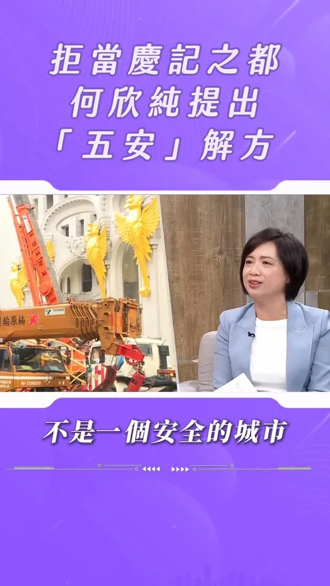
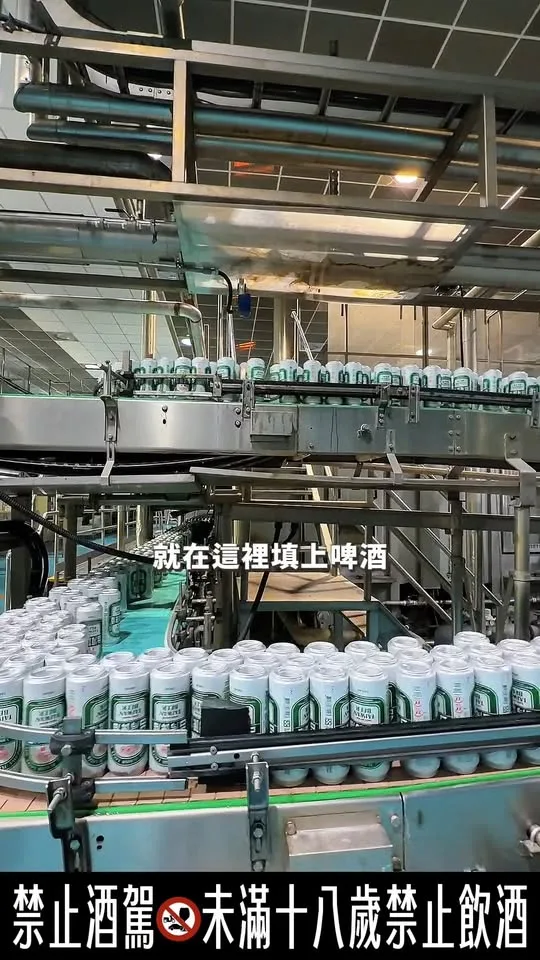
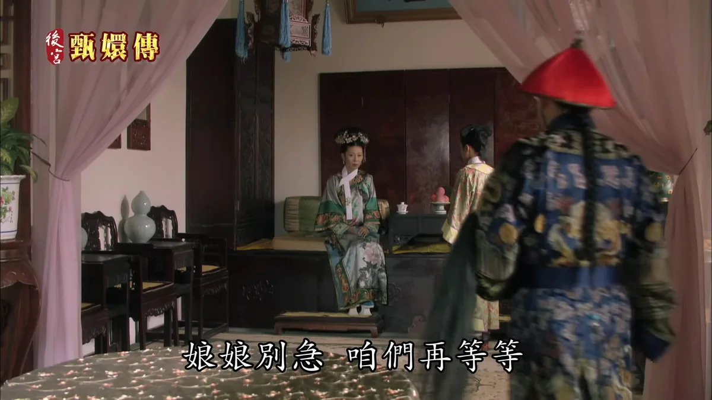

蔡英文為何「怕接何欣純電話」？ 何欣純 重要的事我就是會一直追！
Accounts
| 平台 | 帳號 | 已收錄貼文 | 最後更新 |
|---|---|---|---|
| 官網 | https://a-chun.tw/ | 43 | 2026-09-18 13:00 |
| https://www.facebook.com/94achun/ | 139 | 2026-09-24 22:22 | |
| https://www.instagram.com/a_chun1973/ | 103 | 2026-09-24 22:39 | |
| Threads | https://www.threads.com/@a_chun1973 | 166 | 2026-09-24 22:39 |
| YouTube | https://www.youtube.com/channel/UCFcDN6t7tJ7qObwtyBQHdRg | 175 | 2026-09-25 12:00 |
| LINE 官方帳號 | https://page.line.me/beu1231o | 0 | — |
Timeline
顯示 626 / 626 則
蔡英文為何「怕接何欣純電話」？ 何欣純 重要的事我就是會一直追！


@a_chun1973:台中超多超厲害的！連假來台中走走吧！ 中秋、教師結連假，敬祝平安愉快喔！ 新台中，就交給何欣純！ 嚴禁酒駕 未成年不得飲酒
清潔隊員是守護城市的無名英雄，有他們辛苦付出，才有乾淨美麗的台中。 今天我與台中隊共同宣布「五大承諾 守護清潔第一線」政策，要全面提升清潔隊員的待遇和工作安全： ✅夜點費加碼100元 ▪️由現行100元至120元，提高至200元至220元，將成全國第一，並隨物價適時調整 ▪️針對焚化廠及特殊高風險勤務研議額外加給 ✅擴大人力 ▪️盤點各區服務人口、清運量及勤務負擔，建立合理公開的人力配置標準，逐年擴編員額 ▪️檢討並加速儲備隊員及臨時人員轉正，縮短等待時間，落實同工同酬保障 ✅加速車輛更新 ▪️編足維修經費、下修車輛淘汰年限，優先汰換車齡高、故障頻繁、維修成本高及安全配備不足的車輛 ▪️針對仍在使用的舊式車輛，逐年增設環景影像、倒車警示等設備 ✅裝備升級 ▪️編列專案預算，採購符合職業安全與電氣安全規範的風扇衣，納入標準工作裝備，全面配發具有高溫暴露風險的外勤人員，並完善包含雨衣雨具等各項勤務裝備 ▪️針對大型廢棄家具及床墊處理，將添購大型廢棄物破壞處理機具，增加載運地點及暫置空間，提升清運與處理量能 ✅環保志工隊業務費提高至每年6萬元 將每隊每年業務費由現行2萬4,000元提高至6萬元，讓志工隊運作獲得充足經費支持 清潔隊員的工作繁雜又危險，市府應該成為第一線最有力的後盾，讓他們待遇有保障、勤務更安全、裝備更完善，讓守護城市的英雄受到應有的尊重！ #心存大台中 #市長換欣_台中創新 #首都格局_台中進擊

安全，是台中市民的想望！ 安心，是何欣純要來打造的生活環境建議！ 新台中，就交給何欣純！

安全，是台中市民的想望！ 安心，是何欣純要來打造的生活環境建議！ 新台中，就交給何欣純！
洋流交會，純情相遇！ 來～各位觀眾！久等了！台中純派們，準備迎接洋流了嗎🌊 9/27（日） 沈伯洋將抵達台中，我們會從審計新村開始城市走讀。邀請大家一起來散步、一起聊聊台中的日常，也討論城市的未來願景。 📍地點：審計新村 🕙 時間：9/27（日）10:00 我們週日見💜🧡

蔡其昌 海線等太久了！這次換何欣純拚建設

@a_chun1973:提醒一下台中純派們📣 今天是何欣純第一波募款小物預約下訂的最後一天！ 心動不如馬上行動，趕快把握時間，點擊連結預約下訂👇 https://donate.ecpay.com.tw/home/2026achun/ 📌募款小物內容 👕 A｜何欣純 TEAM TAICHUNG 球衣 捐款滿 3,000元 ➜ 限量台中隊球衣 1 件 🏃 B｜跑跑純應援巾 捐款滿 888元 ➜ 應援巾 1 條 🛍️ C｜台中純網袋 捐款滿 321元 ➜ 台中純網袋 1 個 ⭐ D｜何欣純募款感恩大全套｜限量200組！ 捐款滿 5,000元 ➜ ABC三款一次收藏，再加碼【官方「純」LOGO棒球帽】🧢 📌小提醒：球衣請於捐款備註欄註明 M、L、XL、2L、3L；小物將自 10/15起陸續到貨，並寄送至捐款收據地址。

@a_chun1973:大家看到我的跑跑純公車廣告了嗎？ 我要衝刺台中市長，為市民謀福利，公車乘載著我對台中的願景與祝福， 何欣純要做好3件事：交通串聯、年輕城市、福利升級！ 新台中，就交給何欣純！

張惇涵力挺何欣純｜海線建設不能再等！🌊
何欣純是漲停板指標? !

台中超多超厲害的！連假來台中走走吧！ 中秋、教師節連假，敬祝平安愉快喔！ 新台中，就交給何欣純！ #嚴禁酒駕 #未成年不得飲酒

何欣純喊話29區台中隊 六星市政拚全國第一！

何欣純專訪-安全，是台中市民的想望！安心，是何欣純要來打造的生活環境建議！新台中，就交給何欣純！
洋流交會，純情相遇！ 久等了大家！台中純派們，準備迎接洋流了嗎🌊 9/27（日） 台北 沈伯洋 將抵達台中，我們會從審計新村開始城市走讀。邀請大家一起來散步、一起聊聊台中的日常，也討論城市的未來願景。 📍地點：審計新村 🕙 時間：9/27（日）10:00 我們週日見💜🧡
【何欣純海線競總成立】蔡其昌海線站台 他談台中海線的下一步
@a_chun1973:競選總部成立當天，謝謝每一位來到現場、為我加油的台中純派們！謝謝各位撥空前來，一起見證台中換新的可能！ 11/28，一定要去投票！

大家看到我的跑跑純公車廣告了嗎？ 我要衝刺台中市長，為市民謀福利，公車乘載著我對台中的願景與祝福， 何欣純要做好3件事：交通串聯、年輕城市、福利升級！ 新台中，就交給何欣純！

【何欣純海線競總成立】張惇涵力挺何欣純 台中不能原地踏步

【何欣純海線競總成立】捷運橘線 海線鐵路雙軌高架化 台中機場擴建一次講清楚
台中超多超厲害的！連假來台中走走吧！ 中秋、教師結連假，敬祝平安愉快喔！ 新台中，就交給何欣純！ #嚴禁酒駕 #未成年不得飲酒
明天開始就是中秋連假了，大家準備去哪裡度假呢？ 月圓人團圓，不論是要跟家人吃飯，或是跟朋友相聚，都希望你能享受這段美好時光。 祝大家有個幸福快樂的中秋假期❤️

29區台中隊集結！何欣純一起拚出台中首都格局🔥

@a_chun1973:安全，是台中市民的想望！ 安心，是何欣純要來打造的生活環境建議！ 新台中，就交給何欣純！
@a_chun1973:洋流交會，純情相遇！ 來～各、位、觀、眾、久、等、了！ 台中純派們，準備迎接洋流了嗎🌊 9/27（日） 沈伯洋 @pumashen 將抵達台中，我們會從審計新村開始城市走讀。 邀請大家一起來散步、一起聊聊台中的日常，也討論城市的未來願景。 📍地點：審計新村 🕙 時間：9/27（日）10:00 我們週日見💜🧡

@a_chun1973:看到很多網友建議9/27沈伯洋 @pumashen 來台中玩可以去哪裡吃、哪裡喝？ 也有不少迫不及待洋流的台中純派們，打電話來辦公室詢問活動詳情。 團隊尚在規劃中 快了！請稍候🙏

每天都有許多孩子在校園球場及跑道上運動，所以場地安全一定不能輕忽。 今天接連來到北區 #健行國小、南區 #國光國小、大里區 #立新國小、大里區 #青年高中 及霧峰區 #霧峰國小 會勘，看見許多跑道與球場都已破舊不堪，有的甚至創校至今尚未全面翻修。 場地修繕勢在必行，除了地方及校方自籌修繕經費外，我也全力爭取中央補助，此次走訪的五校工程計畫總經費共2,983萬元，其中中央補助七成約2,088萬元，大大減輕地方及校方的負擔。 其中健行國小、國光國小的跑道及周邊設施，也已評估有急迫改善需求，相關計畫有望獲得核定。 未來我會持續關注校園設施安全，積極爭取資源，讓孩子們擁有更安全、完善的學習與運動環境！ #心存大台中 #市長換欣_台中創新 #首都格局_台中進擊

大家看到我的跑跑純公車廣告了嗎？我要衝刺台中市長，為市民謀福利，公車乘載著我對台中的願景與祝福，何欣純要做好3件事：交通串聯、年輕城市、福利升級！新台中，就交給何欣純！

台中隊可愛的一面都在這！何欣純競選總部成立大會花絮💚
台中有紮實領先的產業基礎，何欣純要做2件事，再造台中產業新核心： 1、在技職教育體系裡好好人才培育。 2、智慧化、AI化，建立產業升級創新中心。 新台中，就交給何欣純！